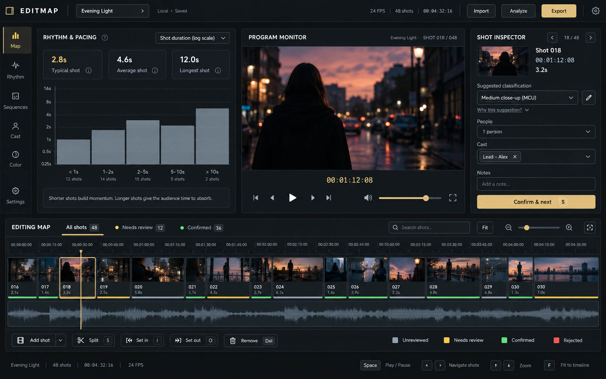

EDITMAP / Three directions
A clearer workspace for seeing structure, inspecting shots, and reviewing suggestions. Dark graphite, restrained gold, and the editing map at the center.
Studio
Analysis, monitor, and shot inspector visible together, with the map below. Best balance for daily use.
Tradeoff: the inspector should become a drawer on narrower windows.

Visual proposals, not an implemented app. Footage, counts, chart values, and some generated controls are illustrative. The written brief defines the intended behavior; timeline durations and existing keyboard bindings must remain authoritative.
Read the design brief and implementation considerations